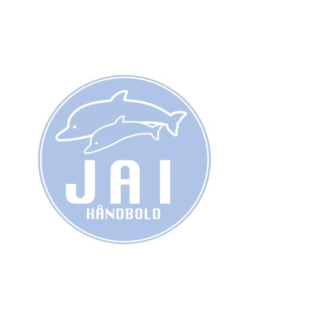

<div>
        <mat-toolbar color="primary">
          
      
          <span>JAI Håndbold</span>
      
          <button mat-icon-button [mat-menu-trigger-for]="menu">
            <mat-icon>more_vert</mat-icon>
          </button>
        </mat-toolbar>
        <mat-menu x-position="before" #menu="matMenu">
          <button mat-menu-item>Holdene</button>
          <button mat-menu-item>Begivenheder</button>
          <button mat-menu-item>Frivillig</button>
          <button mat-menu-item>Bestyrelsen</button>
          <button mat-menu-item>Sponsorer</button>
          <a routerLink="/contact">
            <button mat-menu-item>Kontakt</button>
          </a>
          <button mat-menu-item>Om JAI</button>
        </mat-menu>
      </div>